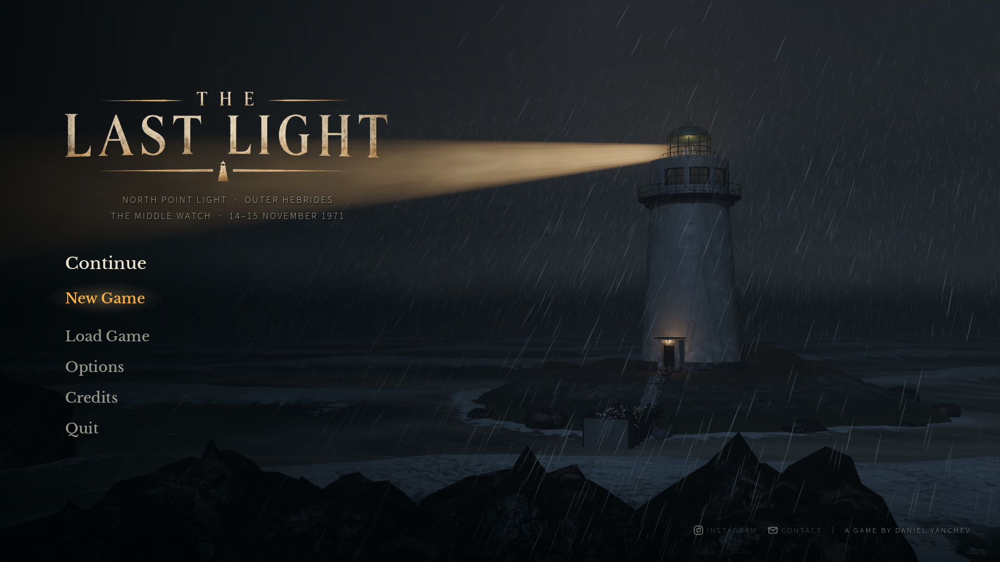
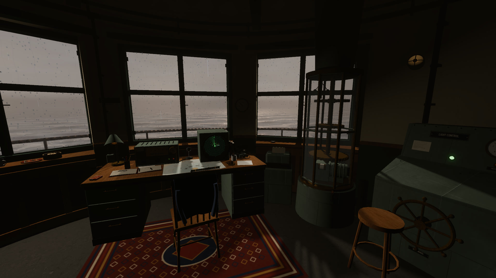

Глава 3 · Мораг Фрейзър, брегова охрана
Осемнайсет минути променят вината
Morag FraserГовори с вас по радиото.
“Eighteen minutes, Callum. They hanged Alasdair Ross’s name on eighteen minutes.”
„Осемнайсет минути, Калъм. Заради тях съсипаха името на Аласдер Рос.“
01:52 Според Мораг:
02:10 Според дневника:
Дневникът оневинява фара.
Вие сте Калъм.
1 “The log says oh-two-ten. The log is right.”
„В дневника пише 02:10. Дневникът е верен.“
2 “Morag, it was eighteen years ago. What does it matter now?”
„Мораг, това беше преди осемнайсет години. Какво значение има сега?“
3 “I was there. The light was out before she struck.”
„Бях там. Фарът не светеше, когато корабът се удари.“
R7 · ch3.dlg / ch3_notes_b · портрет: ChatGPT, подготвен от автора
Вие сте Калъм, пазач на фар. По радиото ви говори Мораг от бреговата охрана. Преди осемнайсет години тук се е разбил корабът Mary Ellen. Мораг е записала, че в 01:52 не е имало светлина. Но в станционния дневник пише 02:10 · след удара. Тези осемнайсет минути оставят вината върху капитана Рос. А Калъм знае, че дневникът е неверен. [КЛИК 1 → посочи трите отговора → мълчи 10 секунди.] Изберете едно, поне наум. [ПАУЗА 3 с.] Ще проследим третия отговор · „Бях там“.
The Last Light · „Последната светлина“
Пазите фара. Водите корабите. Отговаряте.

Наративна игра от първо лице
Шест глави · от здрач до разсъмване
Един играч · офлайн · текст на английски
Godot 4.7 · GDScript · Blender
Build R7 / v1.0.0 · XI клас · заявено направление 3 „Разпределени приложения“
The Last Light е наративна игра от първо лице. Една нощ пазите фара North Point през 1971 година. Поддържате техниката, водите корабите покрай скалите и разговаряте по радиото. Това са две свързани части: какво правите и какво казвате. Шестте глави стигат от здрача до разсъмване. Играта е локална и работи без интернет. Направлението във формуляра е „Разпределени приложения“, но самата игра няма сървър или мрежова синхронизация.
Трейлър · откъс 22 секунди
„Знам какво пишеше в дневника… Аз го написах.“
Калъм е написал неверния запис. Сега трябва да реши дали да го поправи.
Трейлър: 0:18–0:40 от 1:17 · глас само в трейлъра: ElevenLabs
Този дневник не е просто стара улика. Калъм сам е написал неверния запис. [КЛИК 1 → клип 22 секунди → без говорене.] Това беше откъс от трейлъра, не запис на непрекъснато изиграване. Гласът е генериран с ElevenLabs; в играта няма озвучени реплики. [ПРИ ПРОБЛЕМ: прочети заглавието, после напред. В PDF: кадърът е дневникът.]
Действие · захранване
Пускате тока · радиото отново може да работи
Без захранване Лампата е тъмна.
radio_on() = falseСлед действията Горивен кран → START
Лампата светва.
radio_on() = trueРазговорите чакат захранване. Техниката е част от историята.
Преди: без захранване След: кран → START → CHARGE
Нови кадри от R7 · една камера · реални действия на симулацията · проверка: story_test / KITTIWAKE_POWER_OUT
Тук гледната точка е една и съща. Първо няма захранване: настолната лампа е тъмна и разговорите по радиото изчакват. [КЛИК 1 → посочи лампата и зеления индикатор → пауза 3 с.] Отварям крана, задържам START и включвам CHARGE. Батериите вече захранват станцията. Това са два кадъра от реалната игра при контролирана проверка; не показват цялото време за действията. Радиото вече може да работи, но разговорът има и условия в сценария. Тестът за прекъсване на тока отделно проверява, че не се пуска радиоразговор без захранване.
Избор 3 · отговорът става състояние
„Бях там“ записва две стойности
3 “I was there. The light was out before she struck.”„Бях там. Фарът не светеше, когато корабът се удари.“
# ch3.dlg · действителният клон
= admit
! set admitted_to_morag=1
! add rel.morag 2
MORAG: ...Oh, Callum.Преди отговора Признание: не
Отношение: 0
Начално състояние за примера. След отговора Признание: да
Отношение: +2
Флагът пази факта. Веднага: „…О, Калъм.“ По-късно: Мораг ще помни признанието.
Източник: godot/data/story/ch3.dlg · ch3_notes_b / admit
Да проследим третия отговор. Кодът тук е от сценария на играта. Играчът избира „Бях там“ и изпълнението стига до admit. [КЛИК 1 → посочи двете зелени команди → пауза 3 с.] Първата записва флаг: признал съм пред Мораг. Втората добавя две към отношението ѝ към мен. В този пример започвам от нула, затова получавам плюс две. В цяла игра предишни разговори също променят отношението. „…О, Калъм“ е непосредственият ѝ отговор. Записаният флаг ще участва в друг разговор на разсъмване.
Механизъм · данни → логика → екран
Сутрешният разговор прочита записания флаг
1 · Данни ch6.dlgУсловие пред реплика
→ 2 · Логика DialogueRunnerПроверява StoryState
→ 3 · Екран DialogueUIПоказва избрания ред
Състояние от предишния слайд admitted_to_morag = 1
# ch6.dlg · условието е пред репликата
[if has_flag("admitted_to_morag")]
MORAG: You told me first. In the dark,
with the set half dead. I’ll remember that.Същият DialogueRunner работи и в теста без графичен интерфейс.
R7 · dialogue_runner.gd · story_state.gd · story_presenter.gd · dialogue_ui.gd
На сутринта разговорът не гадае какво съм направил. Прочита записания флаг. Следвайте стрелките: файлът ch6.dlg съдържа условие пред репликата; DialogueRunner го проверява в StoryState; интерфейсът показва резултата. [ПОСОЧИ has_flag → пауза 3 с.] Тук флагът е едно и условието е вярно, затова Мораг казва „Ти ми каза пръв“. Така текстът, логиката и екранът са отделени. Мога да изпълня същия разговор в тест без 3D сцената. Това е разделяне на модули вътре в локална игра.
Последица · глава 6 · разсъмване
Същият сутрешен избор. Различна памет.
И в трите проверки Калъм сутринта избира: “Stornoway, North Point. Amend my station log, entry of fifteenth November 1953. Over.”
„Сторноуей, тук Норт Пойнт. Поправете записа ми от 15 ноември 1953 г. Приемам.“
1 „Дневникът е верен“
2 „Какво значение има?“
3 „Бях там“
1 · Тя помни лъжата “You told me at half past one that the log was right. I’ll not say anything about that on the air.”
„В един и половина ми каза, че дневникът е верен. Няма да споменавам това в ефир.“
2 · Тя връща въпроса “You asked me what it mattered, after eighteen years. Well. Now you know.”
„Попита ме какво значение има след осемнайсет години. Е, сега знаеш.“
3 · Тя помни признанието “You told me first. In the dark, with the set half dead. I’ll remember that.”
„Първо на мен каза. В тъмното, с радиото едва работещо. Ще го запомня.“
Променя се реакцията на Мораг. Сутрешният избор остава същият.
Реални реплики: ch6.dlg / ch6_morag_dawn · възпроизведени чрез morag_probe.gd
Това вече е резултатът. И трите проверки започват от нулево отношение и спасен Iona Star. Сутрешното изречение горе остава едно и също: поправям дневника. Първо виждате как Мораг помни ранната лъжа. [ПАУЗА 4 с.] [КЛИК 1 → посочи новия отговор на същото място → пауза 4 с.] Ако съм отбегнал въпроса, тя ми го връща. [КЛИК 2 → посочи „You told me first“ → пауза 4 с.] Ако съм признал, тя помни признанието. Тук не показвам поканата за чай: тя има друго условие · общото отношение трябва да е поне две. Не е гарантирана само от един отговор. [РЕЗЕРВ: ако призная рано, но сутринта мълча, тя казва „I’ll not put that in my log, Callum. You’ll have to.“ Ранното признание не замества поправката в дневника.]
Финал · две отделни оси
Финалът зависи от истината и от кораба
Iona Star е спасен Iona Star е загубен Докладвам Correction„Поправка“ Heard Together„Разгледани заедно“ Мълча Nothing to Report„Нищо за докладване“ Light Exhibited„Светлината е горяла
Проследете пример Къде се срещат
Heard Together Докладвам истината
Ранното признание пред Мораг променя реплики. Само то не определя финала.
StoryDirector.compute_ending · четирите края са достигнати в story_test (25.11.2026) · кадър от R7
Отделям последицата в разговора от избора на финал. Таблицата използва две стойности: казал ли съм истината на разсъмване и спасен ли е Iona Star. Четирите комбинации са видими. [ПОСОЧИ реда „Докладвам истината“ и колоната „загубен“ → пауза 5 с.] [КЛИК 1 → посочи пресечната клетка → пауза 3 с.] Получава се Heard Together: старото и новото разследване се разглеждат заедно. „Загубен кораб“ тук не означава загинали хора · сценарият казва, че всички са спасени. Ранният флаг за Мораг не участва в compute_ending. Мога да призная пред нея, но после да мълча сутринта и при спасен кораб да получа Nothing to Report.
Доказателство · същата логика като в играта
Проверявам точния отговор, не само края
5 / 5 контролирани случая
DialogueRunner + StoryState Пример: ранно признание → поправка сутринта Очаквано “You told me first. In the dark, with the set half dead. I’ll remember that.” Получено “You told me first. In the dark, with the set half dead. I’ll remember that.” Съвпадат флагът, отношението и избраната реплика.
Остава непроверено: Windows версията и пълно ръчно изиграване с хронометър.
Нова сверка: 26.11.2026 · build/morag_probe.gd + build/verify_morag.py · MORAG_VERIFICATION.json
Най-съществената проверка за това, което току-що показах, е точният текст на Мораг. Изпълнявам реалните разговори през DialogueRunner и StoryState. Проверявам пет случая: без ранния разговор, лъжа, отбягване, признание и признание с мълчание на сутринта. Сравнявам флаговете, отношението и очакваните реплики. Тук очакваният и полученият ред съвпадат. [ПАУЗА 3 с.] Отделните по-широки тестове от 25 ноември достигат четирите края. Това не доказва всичко: Windows версията и цялото ръчно изиграване с хронометър още не са проверени.
Авторство · личен принос и използвани средства
Аз задавам посоката и проверявам резултата
Моят принос Идея и посока
Решения за играта
Подбор на материалите
Проверка и тестване
Решенията са записани DECISIONS.md: Q11, Q13, Q16, Q27, Q28 · assets/ASSET_LICENSES.md · презентация: с помощ от Codex
Идеята, посоката, решенията и подборът на резултатите са мои. За кода и Blender работния процес използвах Claude Code под мое ръководство. Не твърдя, че съм написал сам всеки ред. Мога да обясня показания избор, състоянието и условията, и да ги проверя с тест. Портретите и крайните панели са подготвени с ChatGPT. От Suno подбрах музика сред 42 заготовки, с платен план. Гласът е от безплатния план на ElevenLabs и е само в трейлъра; играта няма озвучаване. Текстурите, базовите тела и част от звуците са от CC0 ресурси, описани в лицензионния файл. За тази презентация също използвах помощ от Codex. [ПАУЗА 3 с.]
Продължителност · изчислено, не измерено ръчно
Оценка: {{PT_RANGE}}
Типично около 80 мин · примерните ленти са за „истина + спасен Iona Star“
{{PT_SCENARIOS}}
Добавено време: задачи, търсене, документи и карти
Защо се разширява диапазонът? Повече време за избор, настройка за четене и първо запознаване със задачите.
Основа: два завършени маршрута със спасен кораб. Без кредити (+1–2 мин). Другите краища не са измерени.
Модел: build/playtime/METHOD.md · изчислено от записаните входни данни, сверени на 26.11.2026
Това е оценка, а не време, измерено с хронометър. Двата завършени маршрута със спасен кораб дават закръглен ориентир от 65 до 110 минути, типично около 80. Лентите показват един и същ маршрут при три допускания. Синьото е времевата линия на бота с диалози и механика. Жълтото добавя време за човешките задачи, документите и картите. [ПОСОЧИ разликата между първата и третата лента → пауза 4 с.] Най-много неизвестност има при нов играч, който търси как се изпълняват задачите. Настройката за четене също променя времето. Диалогът и симулацията вървят едновременно и не ги събирам два пъти. При загубен кораб опитите с пълни чакания спират без гориво, затова диапазонът не е доказана граница за всеки край. Кредитите добавят още около минута-две. [РЕЗЕРВ МЕТОД: compute_playtime.py върху realtime.txt. За показания truth_saved: 65,6 / 82,7 / 107,9 мин; bot 3528 / 3643 / 4206 s, human 313 / 1204 / 2117 s, extras 97 / 115 / 154 s. Ниско/средно/високо: избор 5/8/12 s, Reading time ×1/×1/×1,25; 37 задачи ×8/20/35 s ×0,6 плюс документи и лутане. METHOD.md пази формулите, приближенията и неуспешните опити.]
Обратно към първия избор · разсъмване
Какво отговорихте на Мораг?

1 “The log is right.”„Дневникът е верен.“
2 “What does it matter now?”„Какво значение има сега?“
3 “I was there.”„Бях там.“
Изборът остава в състоянието.
Истински кадър от R7 · ch3_notes_b → admitted_to_morag → ch6_morag_dawn
Спомнете си отговора, който избрахте в началото. [ПАУЗА 5 с.] Това са същите три възможности. Проследихме третата: „Бях там“. Видяхме командата, която записва избора, условието, което го чете, и репликата на сутринта. [КЛИК 1 → посочи финалното изречение → пауза 3 с.] Мораг помни признанието. Но дали Калъм ще поправи и официалния дневник, остава отделен негов избор.
Благодаря · въпроси
Отворете проекта
Готов съм за вашите въпроси.
Основен път: страницата на проекта · офлайн: връзките изискват интернет, самата презентация работи без него
Благодаря. На този адрес са страницата на проекта, играта, документацията и презентацията. Отдолу са изходният код и изданието. Готов съм за въпросите ви. [СТОП → остани на слайда. Резерв до общите 15 минути.]